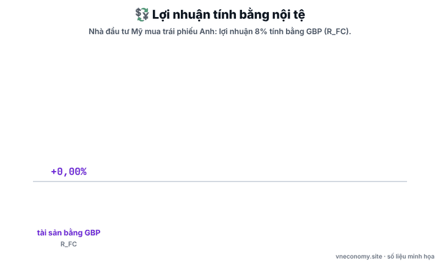
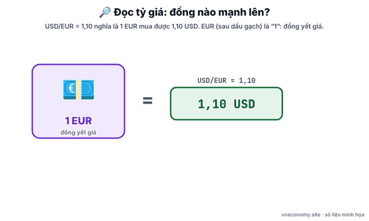
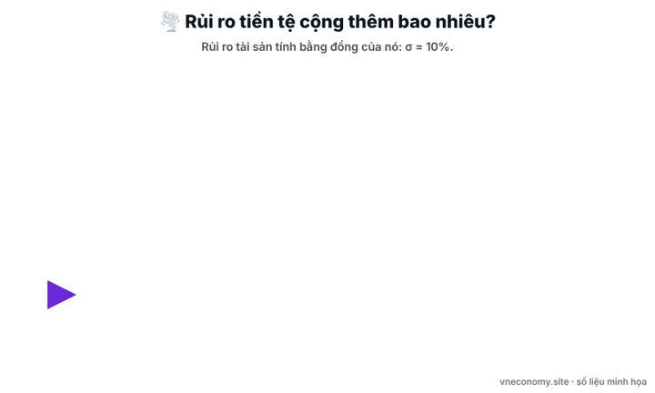
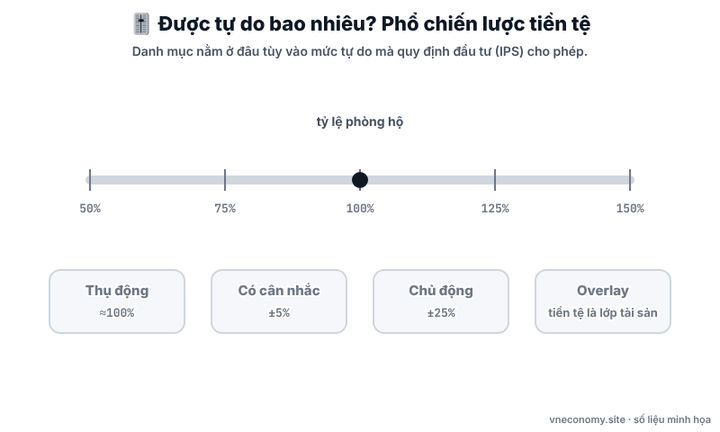
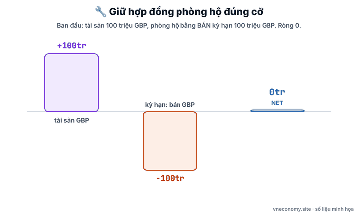
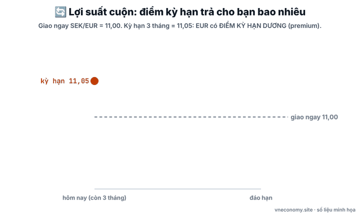
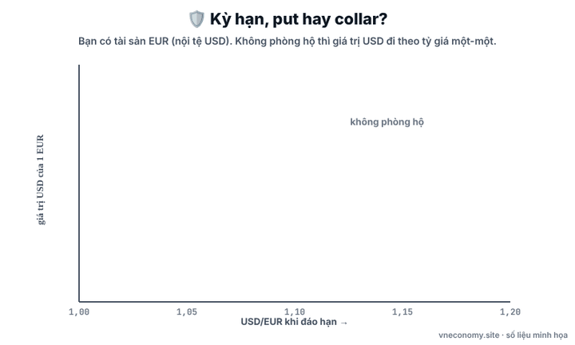
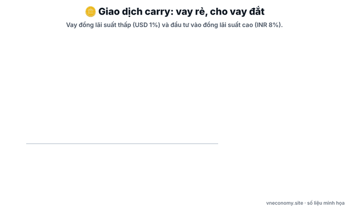
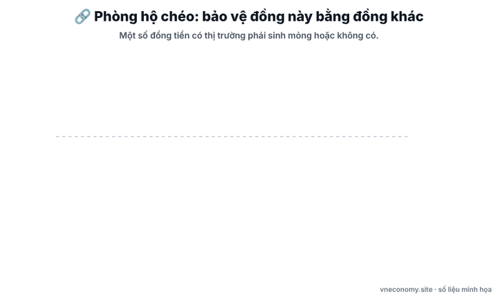

Học CFA · Tiền tệ
Quản trị rủi ro tiền tệ: cơ chế từng bước
Chín đoạn hoạt hình về rủi ro tiền tệ của danh mục quốc tế: lợi nhuận tính bằng nội tệ, phòng hộ bao nhiêu, và các công cụ để làm việc đó
Điểm chính
- Một công thức lợi nhuận: R_DC = (1 + R_FC) × (1 + R_FX) − 1. Ngoại tệ tăng thì lợi nhuận nội tệ cao hơn lợi nhuận bằng ngoại tệ, và ngược lại. Đọc kỹ đồng nào là đồng yết giá trước khi kết luận.
- Phòng hộ bao nhiêu là chuyện của IPS: biên độ quanh 100% hẹp thì thụ động, ±5% là có cân nhắc, rộng và nhắm alpha là chủ động, thuê chuyên gia là overlay. Tương quan chỉ đổi rủi ro, không đổi lợi nhuận kỳ vọng.
- Công cụ có giá: kỳ hạn không tốn phí nhưng bỏ phần tăng và cần cân bằng lại; quyền chọn giữ phần tăng nhưng tốn phí; carry ăn chênh lệch lãi suất nhưng sợ biến động; phòng hộ chéo để lại rủi ro basis.
Phần thứ ba, sau biểu đồ lãi lỗ quyền chọn và hoán đổi, kỳ hạn và hợp đồng tương lai. Mỗi đoạn chạy khoảng 20 giây rồi dừng 4 giây ở đáp án; bên cạnh là câu hỏi, công thức, đáp án và ý nghĩa của nó.
1 · Lợi nhuận và rủi ro tính bằng nội tệ
Mọi câu hỏi về tiền tệ bắt đầu từ một phép nhân: lợi nhuận của tài sản bằng ngoại tệ nhân với biến động của ngoại tệ so với nội tệ. Rủi ro thì cộng theo tương quan.
R_DC = (1 + R_FC) × (1 + R_FX) − 1 · R_FX dương = ngoại tệ mạnh lên

Câu hỏi
Trái phiếu Anh của nhà đầu tư Mỹ lãi 8% tính bằng GBP, GBP tăng 3% so với USD. Lợi nhuận tính bằng USD là bao nhiêu? Nếu GBP giảm 3% thì sao?
Công thức
R_DC = (1 + R_FC) × (1 + R_FX) − 1
Đáp án
1,08 × 1,03 − 1 = 11,24% · nếu GBP giảm: 1,08 × 0,97 − 1 = 4,76%
Hiểu bản chất
Bạn nhận lợi nhuận của tài sản, rồi đổi sang nội tệ theo tỷ giá mới, nên hai lợi nhuận nhân với nhau. Số hạng chéo nhỏ (0,08 × 0,03 = 0,24%) là lý do cộng thẳng bị lệch một chút. Tính ngược: R_FX = (1 + R_DC) ÷ (1 + R_FC) − 1.

Câu hỏi
USD/EUR đi từ 1,10 lên 1,15. Đồng nào mạnh lên, và lợi nhuận USD với nhà đầu tư dùng EUR là bao nhiêu?
Công thức
USD/EUR = số USD cho 1 EUR · lợi nhuận USD với nhà đầu tư EUR = cũ ÷ mới − 1
Đáp án
EUR (đồng yết giá) mua được nhiều USD hơn, nên EUR mạnh lên, USD yếu đi · 1,10 ÷ 1,15 − 1 = −4,35%
Hiểu bản chất
Đồng sau dấu gạch là “1”. Số tăng thì đồng yết giá mạnh lên. Sau đó hỏi đồng nào là nội tệ: ngoại tệ yếu đi làm lợi nhuận nội tệ thấp hơn (R_DC < R_FC).

Câu hỏi
Tài sản có độ biến động 10% tính bằng đồng của nó, đồng tiền có 8%. Độ biến động tính bằng nội tệ là bao nhiêu nếu tương quan là −0,3? Và +0,5?
Công thức
σ²(R_DC) ≈ σ²(R_FC) + σ²(R_FX) + 2 × ρ × σ(R_FC) × σ(R_FX)
Đáp án
ρ = −0,3: 100 + 64 − 48 = 116 → 10,8% · ρ = +0,5: 100 + 64 + 80 = 244 → 15,6%
Hiểu bản chất
Như hai lực đẩy lệch góc: cùng chiều (ρ dương) thì tổng lớn hơn, ngược chiều một phần (ρ âm) thì rủi ro tiền tệ còn có thể giúp giảm rủi ro. Tương quan chỉ thay đổi RỦI RO; lợi nhuận kỳ vọng không đổi.
2 · Phòng hộ bao nhiêu và giữ nó thế nào
Quy định đầu tư (IPS) quyết định biên độ được phép lệch khỏi mức trung tính. Sau đó hợp đồng phải được giữ đúng cỡ khi tài sản thay đổi, và điểm kỳ hạn quyết định phòng hộ được trả hay phải trả tiền.

Câu hỏi
IPS cho phép tỷ lệ phòng hộ 97–103%. Một IPS khác cho ±5% quanh mức trung tính, IPS thứ ba cho ±25% “để thêm alpha”, IPS thứ tư thuê chuyên gia tiền tệ bên ngoài. Mỗi IPS ứng với chiến lược nào?
Công thức
Độ rộng biên độ → thụ động · có cân nhắc · chủ động · overlay
Đáp án
97–103% → thụ động · ±5% → có cân nhắc · ±25%, alpha → chủ động · chuyên gia bên ngoài → overlay tiền tệ
Hiểu bản chất
Biên độ càng hẹp, càng ít chỗ cho quan điểm. Chọn theo khách hàng: chịu rủi ro thấp, kỳ hạn ngắn, cần thanh khoản, nhiều trái phiếu → phòng hộ nhiều và thụ động; kỳ hạn dài, nhiều cổ phiếu, có quan điểm và kỹ năng → phòng hộ ít và tự do hơn.

Câu hỏi
Tài sản GBP 100 triệu được phòng hộ bằng bán kỳ hạn 100 triệu GBP. Tài sản giảm còn 93 triệu. Cân bằng lại thế nào?
Công thức
Hợp đồng mới = giá trị tài sản mới · giao dịch = hợp đồng mới − hợp đồng cũ
Đáp án
Hợp đồng thừa 7 triệu (phòng hộ quá mức, ròng bán 7 triệu GBP) → mua kỳ hạn 7 triệu GBP cùng ngày đáo hạn
Hiểu bản chất
Phòng hộ tĩnh khớp với giá trị ngày đầu sẽ lệch dần khi giá tài sản và tỷ giá thay đổi. Phòng hộ động cân bằng lại về mục tiêu, đổi lại phải giao dịch nhiều hơn và tốn chênh lệch mua bán. Chấp nhận lệch nhiều hơn thì cân bằng ít và rẻ hơn.

Câu hỏi
Giao ngay SEK/EUR là 11,00, kỳ hạn 3 tháng là 11,05. Bên phòng hộ bán EUR kỳ hạn. Lợi suất cuộn là bao nhiêu nếu giao ngay đứng ở 11,00? Nếu kỳ hạn là 10,95?
Công thức
Lợi suất cuộn (bán kỳ hạn) ≈ (kỳ hạn − giao ngay) ÷ giao ngay
Đáp án
(11,05 − 11,00) ÷ 11,00 = +0,45% mỗi quý · ở 10,95: −0,45% (một chi phí)
Hiểu bản chất
Giá kỳ hạn hội tụ về giao ngay khi đáo hạn. Nếu bạn BÁN đồng yết giá ở mức kỳ hạn cao hơn giao ngay (premium), đoạn trượt đó có lợi cho bạn; ở mức chiết khấu thì bất lợi. Điểm kỳ hạn phản ánh chênh lệch lãi suất giữa hai đồng tiền.
3 · Công cụ: quyền chọn, carry và phòng hộ chéo
Mỗi công cụ đổi một thứ lấy một thứ: phí lấy phần tăng, chênh lệch lãi suất lấy rủi ro sập, thanh khoản lấy rủi ro basis.

Câu hỏi
Bạn giữ tài sản EUR (nội tệ USD), giao ngay 1,10. So sánh kỳ hạn ở 1,10, put 1,08 phí 0,01, và collar: cùng put đó cộng bán call 1,13 lấy 0,008.
Công thức
Sàn put = K − phí · collar: sàn = K put − phí ròng, trần = K call − phí ròng
Đáp án
Kỳ hạn: khóa ở 1,10 · put: sàn 1,07, giữ phần tăng · collar: phí ròng 0,002, sàn 1,078, trần 1,128
Hiểu bản chất
Kỳ hạn bỏ cả phần giảm lẫn phần tăng và không tốn phí ban đầu. Put giữ phần tăng nhưng tốn phí. Bán quyền chọn (collar, seagull) thu lại phí nhưng nhường bớt phần tăng: bảo vệ rẻ hơn luôn phải đánh đổi.

Câu hỏi
Vay USD lãi 1%, đầu tư INR lãi 8%, không phòng hộ. Bạn được bao nhiêu nếu INR đứng yên, giảm 5%, giảm 10%?
Công thức
Lợi nhuận ≈ (1 + r cao) × (1 + biến động đồng lãi cao) − (1 + r thấp)
Đáp án
Đứng yên: +7% · INR −5%: 1,08 × 0,95 − 1,01 = +1,6% · INR −10%: −3,8%
Hiểu bản chất
Ngang giá lãi suất nói đồng lãi cao sẽ giảm đúng bằng chênh lệch lãi suất; giao dịch carry cược rằng điều đó không xảy ra (độ lệch của tỷ giá kỳ hạn). Nó lãi đều nhỏ và thỉnh thoảng sập khi biến động tăng vọt: phân phối lệch âm.

Câu hỏi
Một đồng tiền không có phái sinh thanh khoản. Một đồng đại diện thanh khoản có tương quan 0,8 với nó; độ biến động lần lượt 12% và 10%. Tỷ lệ phòng hộ nào cho phương sai nhỏ nhất, và rủi ro nào còn lại?
Công thức
h* = ρ × σ(rủi ro) ÷ σ(đại diện)
Đáp án
0,8 × 12% ÷ 10% = 0,96 giá trị rủi ro, phòng hộ bằng đồng đại diện · phần còn lại là rủi ro basis
Hiểu bản chất
Phòng hộ chéo bảo vệ một đồng tiền bằng đồng khác đi cùng chiều, nên chỉ tốt bằng mức tương quan. Với đồng tiền không giao được, hợp đồng kỳ hạn không giao (NDF) chỉ thanh toán phần lãi lỗ, thường bằng USD.
Phương pháp và nguồn
Mọi con số là ví dụ minh họa, không phải giá thị trường. Các công thức dùng trong các đoạn:
- R_DC = (1 + R_FC) × (1 + R_FX) − 1 · tính ngược: R_FX = (1 + R_DC) ÷ (1 + R_FC) − 1. Danh mục nhiều đồng tiền: cộng R_DC theo tỷ trọng.
- σ²(R_DC) ≈ σ²(R_FC) + σ²(R_FX) + 2ρσ(R_FC)σ(R_FX).
- Lợi suất cuộn của vị thế bán kỳ hạn ≈ (kỳ hạn − giao ngay) ÷ giao ngay · điểm kỳ hạn phản ánh chênh lệch lãi suất.
- Sàn của put = giá thực hiện − phí · collar: sàn và trần trừ phí ròng.
- Tỷ lệ phòng hộ phương sai nhỏ nhất h* = ρ × σ(rủi ro) ÷ σ(công cụ).
Tài liệu học tập cá nhân, không phải khuyến nghị đầu tư.